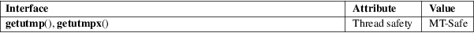

getutmp, getutmpx − copy utmp structure to utmpx, and vice versa
Standard C library (libc, −lc)
#define
_GNU_SOURCE /* See feature_test_macros(7) */
#include <utmpx.h>
void
getutmp(const struct utmpx *ux, struct utmp
*u);
void getutmpx(const struct utmp *u, struct
utmpx *ux);
The getutmp() function copies the fields of the utmpx structure pointed to by ux to the corresponding fields of the utmp structure pointed to by u. The getutmpx() function performs the converse operation.
These functions do not return a value.
For an explanation of the terms used in this section, see attributes(7).

None.
glibc 2.1.1. Solaris, NetBSD.
These functions exist primarily for compatibility with other systems where the utmp and utmpx structures contain different fields, or the size of corresponding fields differs. On Linux, the two structures contain the same fields, and the fields have the same sizes.
utmpdump(1), getutent(3), utmp(5)